Enumeración NTDS
Haciendo peticiones a la base de datos del domino NTDS.dit
Para comando básico con modulo de AD (la libreria que se añadió en la anterior sección) tenemos lo siguiente:
Get-ADDomain
Proporciona información general sobre el Active Directory, en concreto del dominio como SID, forest, master de la infraestructura “DC01.corp.local”
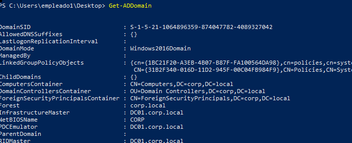
Para power view tenemos el comando:
Get-NetDomain
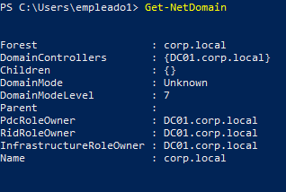
Get-DomainPolicy
(Get-DomainPolicy). "SystemAccess"
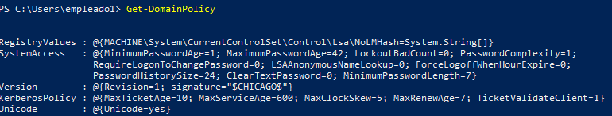

Para obtener mas información sobre el controlador de dominio:
→ Modulo de AD
Get-ADDomainController

→ Powerview
Get-NetDomainController
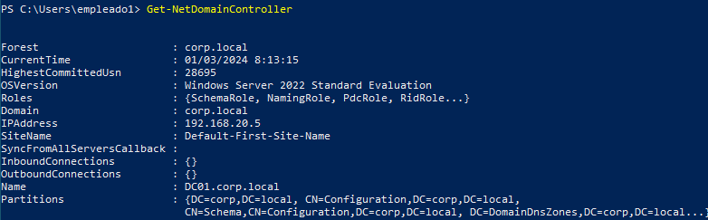
Es de tener en cuenta que el uso de powerview conlleva algunos riesgos a nivel de tráfico si nos encontramos con algun IDS como SNORT.
Si ejecutamos powerview y nos fijamos en SNORT:
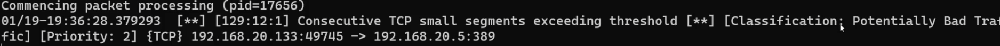
Esto se debe a que las peticiones que implementa powerview o llamadas puede haber paquetes que no sean correctos del todo aunque no es un aviso alarmante desde un punto de vista del departamento de seguridad, pero hay que tener en cuenta que a nivel de red powerview deja algunas trazas en el tráfico de red.
Ahora sabiendo el DNS del controlador de dominio, IP, etc así que vamos a recaudar información sobre los usuarios del domino
:
→ Modulo AD
Get-ADUser -Filter *
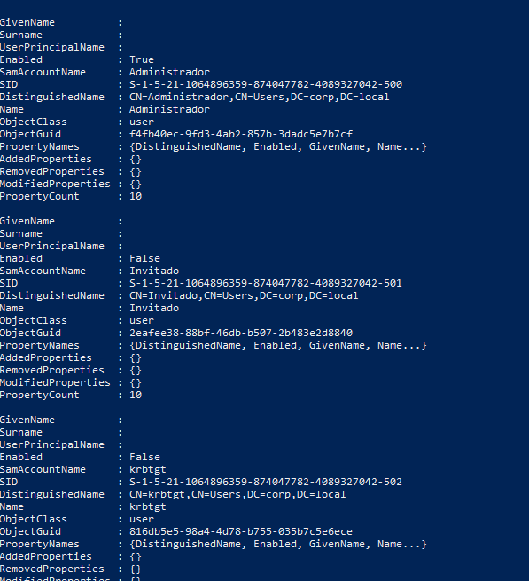
Obtenemos todos los usuarios pertenecientes al dominio.
Si queremos filtrar:
Get-ADUser -Filter * | select Name,ObjectClass, ObjectGuid
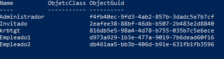
→ Powerview:
Get-NetUser
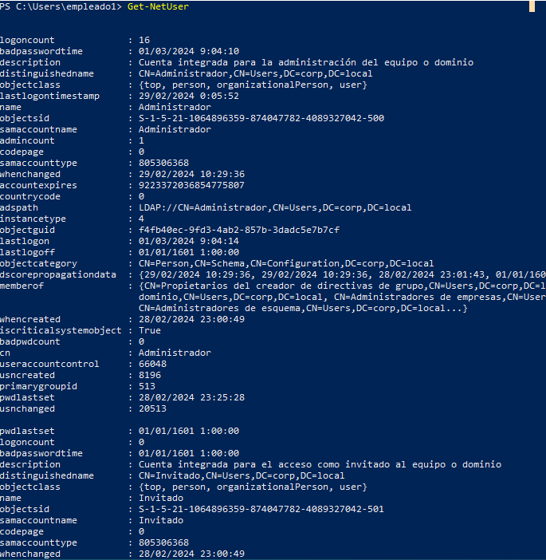
Get-NetUser | select name,lastlogoff,lastlogon
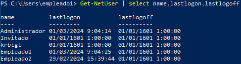
Ahora veremos información sobre los equipos del dominio
:
→ Modulo AD
Get-ADComputer -Filter * | select name,...
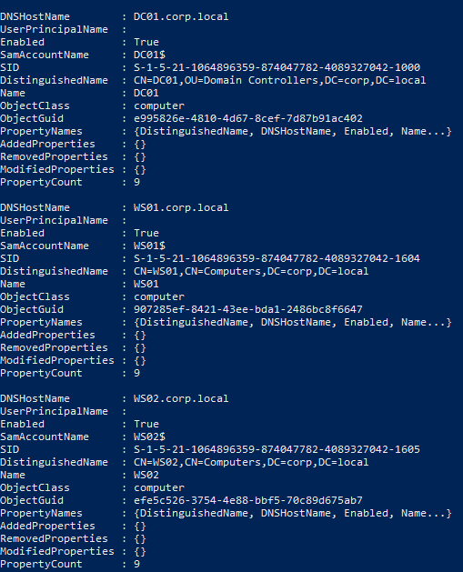
→ Powerview:
Get-NetComputer | select name,operatingsystemversion,...
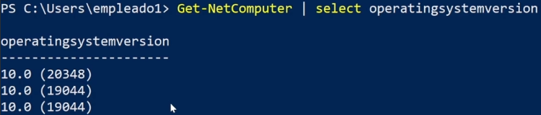
Con powerview podemos saber que equipos están levantados:
Get-NetComputer -Ping | select name,operatingsystem
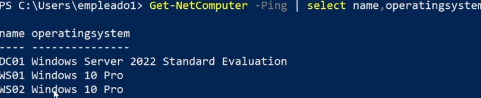
Otros objetos interesantes que obtener del Active Directory:
→ powerview:
Obtener grupos del dominio
Get-DomainGroup
Usuarios del grupo administradores:
Get-NetGroupMember
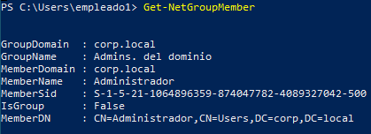
Podemos identificar recursos compartidos:
Find-DomainShare
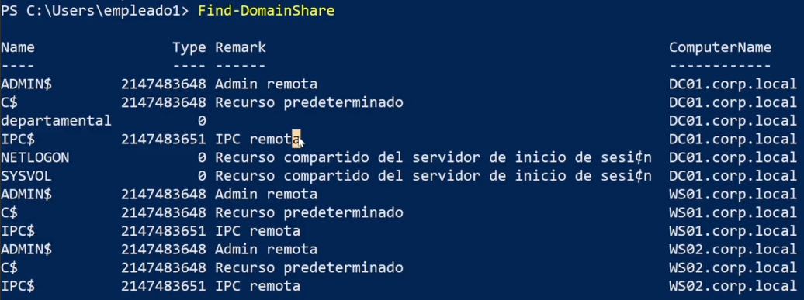
Hay que tener en cuenta que este comando si realiza un pequeño escaneo de la red y ser actividad un poco más intrusiva.
Para enumerar unidades organizativas:
Get-NetOU
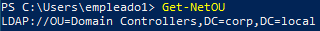
GPO´S:
Get-NetGPO | select displayname
Lista todas las policy del dominio, por ejemplo la que creamos anteriormente:
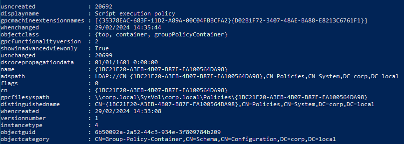
Podemos pedir que GPO aplican a un equipo en concreto:
Get-NetGPO -ComputerIdentity WS02
Algunos comandos más
:
Get-ObjectAcl -SamAccountName empleado1
Para obtener las access list de ese usuario en concreto.
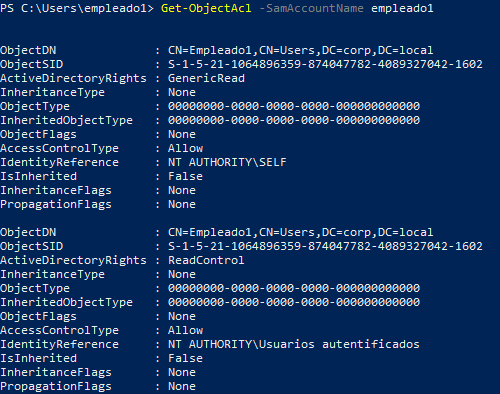
Podemos recabar info sobre el forest:
Get-NetForestDomain
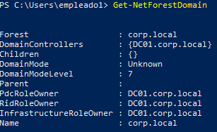
Para mas comandos de Powerview :
https://viperone.gitbook.io/pentest-everything/everything/everything-active-directory/ad-enumeration
Un comando más para encontrar que máquinas de dominio tienen un usuario administrador:
Find-LocalAdminAccess -Verbose
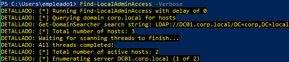
Todo esto podremos hacerlo sin necesidad de tener acceso a un ordenador de la infraestructura, solo las credenciales y kali
LDAPSEARCH:
El siguiente comando es un intento de sesión mediante unas credenciales que por defecto están deshabilitadas en la ldap que permiten conexión sin identificación así como en ftp se encuentra el anonymous.
ldapsearch -X -h 192.168.20.5 -D '' -W '' -b "DC=corp,DC=local"
-x → modo de autenticación básico
-h → host donde se encuentra la base de datos
-D → nombre de usuario dentro del dominio
-w → contraseña
-b →con que objetos del dominio queremos interactuar.
Sabiendo las credenciales que tenemos:
ldapsearch -x -h 192.168.20.5 -D 'CORP\empleado1' -w 'Passw0rd1' -b "DC=corp,DC=local"
ldapsearch -x -h 192.168.20.5 -D 'CORP\empleado1' -w 'Passw0rd1' -b "CN=Users,DC=corp,DC=local"
ldapsearch -x -h 192.168.20.5 -D 'CORP\empleado1' -w 'Passw0rd1' -b "CN=Administradores,CN=Builtin,DC=corp,DC=local"
PYWERVIEW:
De igual manera permite interactuar con la base de datos mediante LDAP:
pywerview get-netdomaincontroller -u empleado1 --dc-ip 192.168.20.5 -p Passw0rd1
Devuelve información relativa al controlador de dominio
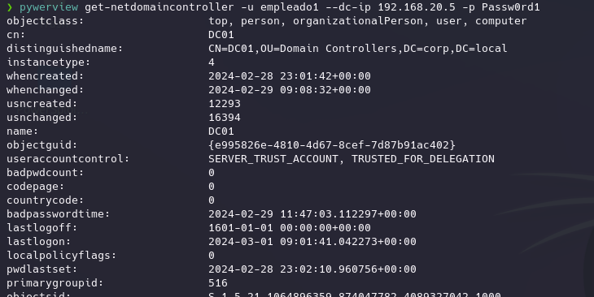
Para usuarios:
pywerview get-netuser -u empleado1 --dc-ip 192.168.20.5 -p Passw0rd1
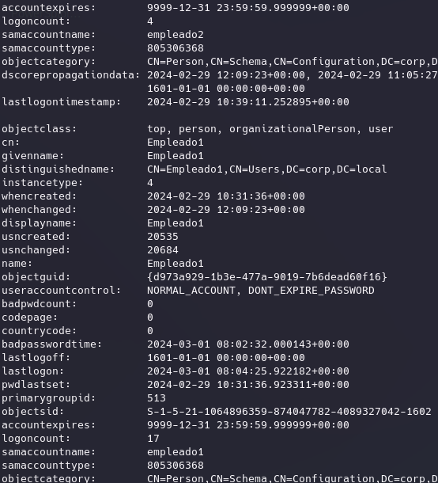
Para grupos:
pywerview get-netgroup -u empleado1 --dc-ip 192.168.20.5 -p Passw0rd1
Para GPO:
pywerview get-netgpo -u empleado1 --dc-ip 192.168.20.5 -p Passw0rd1
JXPLORER
:
Para interactuar de forma gráfica:
jxplorer
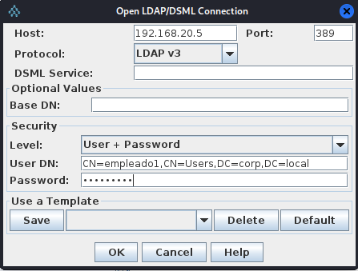
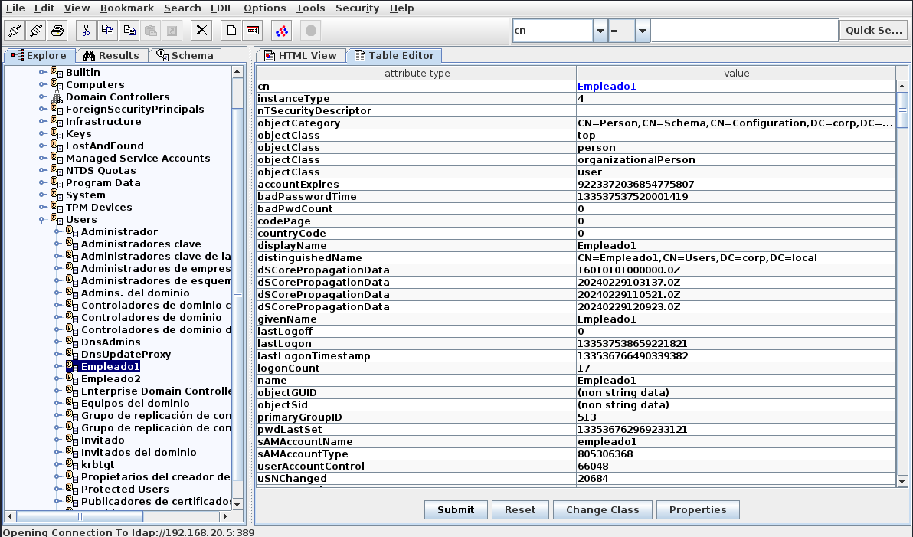